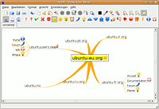

Mind Map
Zum Verständnis dieses Artikels sind folgende Seiten hilfreich:
Eine Mind Map zeigt die Beziehungen zwischen verschiedenen Begriffen in einer grafischen Darstellung (Assoziogramm). Um eine solche Mind Map anzufertigen, kann man Computerprogramme verwenden. Zum einen ist die Darstellung einfacher und zum anderen kann man diese jederzeit beliebig verändern/erweitern.
Nachfolgend eine Übersicht, welche Programme unter Ubuntu zum Mind Mapping eingesetzt werden können.
Programme¶
FreeMind¶
FreeMind  erstellt automatisch geordnete Mind Maps mit Symbolen, Bildern und Links. Auch kann man mehrere Knoten miteinander verbinden. Von Freemind erzeugte Maps sehen im Vergleich mit den anderen hier aufgeführten Programmen am besten aus, welche die Verbindungslinien teilweise sehr pixelig darstellen. Mit Freeplane (siehe nächster Abschnitt) gibt es eine aktuellere Fassung.
erstellt automatisch geordnete Mind Maps mit Symbolen, Bildern und Links. Auch kann man mehrere Knoten miteinander verbinden. Von Freemind erzeugte Maps sehen im Vergleich mit den anderen hier aufgeführten Programmen am besten aus, welche die Verbindungslinien teilweise sehr pixelig darstellen. Mit Freeplane (siehe nächster Abschnitt) gibt es eine aktuellere Fassung.
Interessant ist die Möglichkeit, diverse nationale Ausgaben der Wikipedia mit Wikimindmap abzufragen und daraus eine MindMap zu erzeugen, die anschließend mit FreeMind weiterverarbeitet werden kann.
Voraussetzungen¶
Vor der Nutzung muss eine Java-Laufzeitumgebung (JRE) installiert werden.
Installation¶
Die Version 0.9 von FreeMind befindet sich bis Ubuntu 15.10 in den offiziellen Paketquellen. Folgendes Paket muss installiert [1] werden:
freemind (universe)
 mit apturl
mit apturl
Paketliste zum Kopieren:
sudo apt-get install freemind
sudo aptitude install freemind
Die Version 1.0 oder neuer muss manuell installiert werden. Dazu lädt man sich die Datei freemind-bin-max-VERSION.zip  herunter und entpackt diese in einen beliebigen Ordner. Der Programmstart erfolgt über die Datei freemind.sh.
herunter und entpackt diese in einen beliebigen Ordner. Der Programmstart erfolgt über die Datei freemind.sh.
Freeplane¶
Freeplane ist gemeinsam mit XMind (siehe unten) ein weiteres auf Java basierendes Programm. Es ist aus FreeMind (siehe oben) entstanden und teilt daher die oben beschriebenen Fähigkeiten, legt den Schwerpunkt aber auf eine einfache und unkomplizierte Bedienung.
Voraussetzungen¶
Vor der Nutzung muss eine Java-Laufzeitumgebung (JRE) installiert werden.
Installation¶
Freeplane befindet sich in den offiziellen Paketquellen. Folgendes Paket muss installiert [1] werden:
freeplane (universe)
mit apturl
Paketliste zum Kopieren:
sudo apt-get install freeplane
sudo aptitude install freeplane
Für ältere Ubuntu-Versionen gibt es eine Anleitung zur manuellen Installation . Faktisch lädt man sich über die Projektseite eine Archivdatei herunter, die anschließend zuerst entpackt werden muss. Nun kann Freeplane direkt aus dem entpackten Ordner gestartet werden.
XMind¶
Das Ende 2008 erstmals erschienene XMind ist EPL und LGPL dual-lizenziert. Die deutsche Sprache wird standardmäßig unterstützt. Das Programm ist deutlich leistungsfähiger als beispielsweise FreeMind. Es können verschiedene Gliederungstypen, Themen und vieles mehr ausgewählt werden. Zusammenfassungen und Verlinkungen (zu anderen Themen, Dateianhängen und ins Internet) sind möglich. Es können auch vielerlei Exportmöglichkeiten ausgewählt werden. In der kostenlosen Version ist u.a. ein Export nach PDF oder Office-Programmen nicht möglich (Details ), dafür kann man aber in viele Bildformate exportieren. Das Programm ist mit FreeMind kompatibel und kann auch Dateien des Programms MindManager importieren.
Installation¶
Hinweis!
Fremdsoftware kann das System gefährden.
Die plattformübergreifende, auf Java basierende Software kann von der Projektseite als ca. 135 MiB große Archivdatei im ZIP-Format heruntergeladen werden. Diese muss anschließend noch entpackt werden (idealerweise in einen eigenen Ordner), bevor man den Installationsassistenten starten kann:
./setup.sh
Deutschsprachige Tipps und Tricks zur Benutzung sind im XMind Blog  zu finden. Unter Umständen können Probleme auftreten, die sich aber zumindest teilweise lösen lassen (siehe auch UI does not work properly in Ubuntu 16.04 ).
zu finden. Unter Umständen können Probleme auftreten, die sich aber zumindest teilweise lösen lassen (siehe auch UI does not work properly in Ubuntu 16.04 ).
Falls es zu Problemen beim Start von XMind kommt und Java 9 installiert ist, empfielt es sich mittels update-alternatives die Javaversion auf 8 herunter zusetzen.
Semantik¶
Mit dem KDE-Programm Semantik (ehemals Kdissert) lassen sich ebenfalls sehr umfangreiche Mind Maps mit Symbolen, Bildern, Verweisen zu externen Dokumenten und formatierten Kommentaren erstellen. Interessant ist allerdings die Möglichkeit, die Knoten sortieren zu können. Außerdem lassen sich aus Mind Maps direkt S5-Präsentationen, PDFLaTeX-Dokumente und Latex-Beamer-Präsentationen, OpenDocument-Texte und -Präsentationen sowie Java Applets und HTML-Seiten erstellen.
Labyrinth Mindmaps¶
Labyrinth Mindmaps beschränkt sich zwar auf die wichtigsten Funktionen wie Knoten zu erstellen, Kommentare zu schreiben und Bilder einzufügen, liefert aber neben einer Verwaltung der Mindmaps auch die Funktion, mit der Maus Zeichnungen zu erstellen und diese in die Mind Map einzufügen.
VYM (View Your Mind)¶

VYM (View Your Mind) baut auf dem Qt-Toolkit auf, ohne aber die umfangreichen KDE-Bibliotheken zu benutzen. Das Programm fügt sich deshalb optisch sehr gut in den KDE-Desktop ein, lässt sich aber auch unter anderen Desktop-Umgebungen problemlos installieren und nutzen. Das vym-eigene Speicherformat mit der Endung .vym ist ein Zip-Archiv, dass eine XML-Datei sowie die benötigten Bilddateien enthält.
In der Darstellung benutzt Vym eine Mischung aus frei wählbarer und automatischer Platzierung. Die direkt mit dem Wurzelelement verbundenen Elemente können mit der Maus frei bewegt werden. Alle übrigen untergeordneten Elemente werden automatisch platziert.
Folgende Funktionen bietet Vym:
Einfache Bedienung über Maus oder Tastatur
Intuitive Tastaturbedienung ( Einfg , Entf , Pfeiltasten)
Auszeichnung der einzelnen Zweige und Elemente mittels Bildern, Farben und Symbolen (siehe untere Werkzeugleiste im Bildschirmfoto)
Verknüpfungen einzelner Elemente mit anderen Vym-Maps und allgemeinen URLs
Notizen für jeden Knoten in einem externen Editorfenster
Import ganzer Vym-Maps in einzelne Knoten
Export in zahlreiche Formate, u.a. JPEG, PNG, XHTML-Webseite, nichtkomprimiertes XML, LaTeX und als OpenOffice-Impress-Präsentation
Hinweis:
Einige Funktionen (Bilder, Links, Vym-Map-Import) sind nur über das Kontextmenü einzelner Knoten erreichbar.
yEd¶
yEd ist ein mächtiges Werkzeug zum Zeichnen von Graphen, Netzwerken und Diagrammen. Es kann verwendet werden, um schnell Zeichnungen zu erstellen und diese automatisch anzuordnen bzw. zu arrangieren.
Weitere Programme¶
Visual Understanding Environment (VUE)
- Digitale Informationen strukturieren, präsentieren und teilenCmapTools
- Knowledge MapsDeepaMehta
- "networked semantic desktop"Docear
- The Academic Literature SuiteMindRaider
- Notizbuch und Gliederungseditor
 Sammeln und Gliedern
Sammeln und Gliedern- Erstellt mit Inyoka
-
 2004 – 2017 ubuntuusers.de • Einige Rechte vorbehalten
2004 – 2017 ubuntuusers.de • Einige Rechte vorbehalten
Lizenz • Kontakt • Datenschutz • Impressum • Serverstatus -
Serverhousing gespendet von